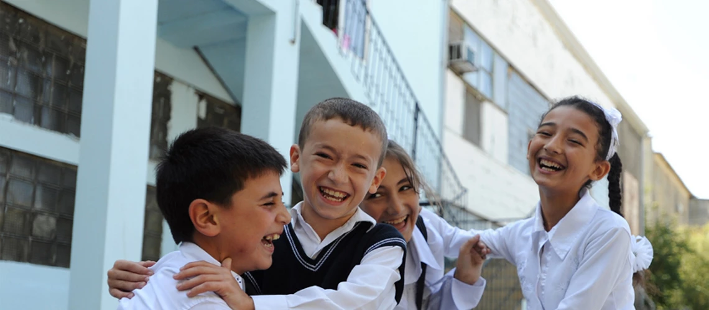
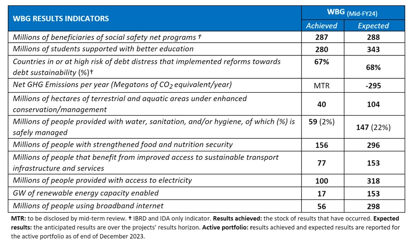

How people’s lives have improved: What our World Bank Group scorecard tells us
RITHIVASAN/03-JUL-2024
Not long ago, I challenged a group of young people to reflect on the development progress achieved so far. And to look at current challenges with the same sense of resolve. I did the same, with optimism and confidence in the World Bank Group’s ability to step up and do even more. When it comes to improving people’s lives, there’s always more to be done. More impact to have. More lives to transform. In today’s troubled world, achieving results is imperative. More than ever, development results—as well as capturing lessons and trends in what works — is what should drive us. Only then can we track our progress toward our ultimate goal: a world free of poverty on a livable planet.
The World Bank Group scorecard
This is the journey we’re on, driven by outcomes and evidence. Measuring our results is a cornerstone of our work to become more transparent, accountable, and deliver impact that changes lives. Through our new World Bank Group scorecard, we will get a better sense of how we are doing, where we are going, and where we want to be. Today, we’re releasing the first 11 of 22 indicators, from how many students have benefited from better education to how many people are using broadband internet to how many people got access to safe water, sanitation, and hygiene. More than numbers, these are critical indicators to inform our strategies, enhance transparency, help us identify gaps, and enrich our dialogue with country and partners. They offer us an opportunity to assess the relevance of our priorities at the country level, supporting clients on how to make the best choices and investments for people. It’s a work in progress and only reflects part of our total portfolio. Later this year, we will share the data for the full set of the remaining indicators, and we will continue to refine our methodologies and gather more and better data. The scorecard is transforming the way we measure outcomes. By unifying data from the World Bank, International Finance Corporation, and Multilateral Investment Guarantee Agency, we amplify our collective strength. Together, we can better target public sector interventions, pinpoint transformative private investments, and identify where risk mitigation will unlock critical projects.
The Data
Take food security:
To date, the data captured in our active portfolio has helped feed 156 million people*. Roughly 50 percent of them live in countries affected by conflict and fragility, where help is most needed. And nearly half of all the people we help are women and girls. But are we doing enough? Look at Africa, for instance. Our portfolio supports almost a quarter of Africa’s food insecure population. While this is significant, we must redouble efforts to mobilize the private sector and development partners and deploy our knowledge more effectively to scale up our impact.
Moving Forward
These examples offer just a few of the provisional insights from our new scorecard. But the story is not complete yet. This is just the start, and our data will become firmer over time. My takeaway is clear: It’s time for all of us to double down on transparency and accountability for results, learning from what works and what doesn’t, and adjusting as we go together on this journey.
